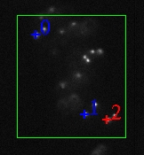

The Video
Spot Tracker program is used to track the motion of one or more spots
in a video file, from a DirectShow camera, from a Roper Scientific camera, or
from a SPOT camera. The program currently runs only on Windows.
The Video
Spot Tracker program is used to track the motion of one or more spots
in a video file, from a DirectShow camera, from a Roper Scientific camera, or
from a SPOT camera. The program currently runs only on Windows.The Video
Spot Tracker program is used to track the motion of one or more spots
in a video file, from a DirectShow camera, from a Roper Scientific camera, or
from a SPOT camera. The program currently runs only on Windows.
The program is run by dragging a video file onto the desktop icon that was created when the program was installed. To learn how to run the program using a live DirectShow video camera, or with a Roper or SPOT camera, contact Russ Taylor at taylorr@cs.unc.edu.
When the program is run, two windows will appear. The window that appears to the right contains the first image within the video file. The window that appears on the left when the program is run is shown in this web page to the right. It contains a number of interaction widgets that are used to control the program. They are described below:
 If the video
file contains different data sets in the red, green, and blue channels then
you will need to select the one you want to view. By default, the red channel
(channel 0) is selected. To select a different channel, click on the "0"
beneath the red_green_blue slider and type its number into the
dialog box that appears. Enter 1 for green and 2 for blue. The video window
should change to display the selected channel.
If the video
file contains different data sets in the red, green, and blue channels then
you will need to select the one you want to view. By default, the red channel
(channel 0) is selected. To select a different channel, click on the "0"
beneath the red_green_blue slider and type its number into the
dialog box that appears. Enter 1 for green and 2 for blue. The video window
should change to display the selected channel.
To select the first spot to track, click on its center with the left mouse button. A red plus sign will appear at the location you have selected. If you want to adjust its radius, you can hold the mouse button down after you have clicked and pull the mouse away from the center; pretty soon, the radius of the disk will track the distance you have pulled the mouse from the center. You can also adjust the radius by clicking on the number beneat the radius slider and entering it into the dialog box that appears.
To select more spots to track, click on the center of each new spot with the right mouse button. The default radius of each new spot tracker will match the radius of the spot that was active when it is created. When a new tracker is created, all other trackers turn blue.
If you click with the left mouse button when there is more than one tracker, the closest tracker is moved to the location you picked and it becomes the active tracker (in red). The active tracker's position and radius are shown in the user interface, and they can be edited by clicking on the number beneath the relevant slider. By selecting different trackers using the left mouse button, you can adjust the position and radius of each tracker one at a time.
 There are
three types of tracking kernels available within the program. The overriding
parameter for tracking is whether the spots are dark points in a lighter background
(the default) or lighter points in a dark background). This is controlled using
the dark_spot check box located at the top of the user interface.
You should set this for the type of spot you are seeking.
There are
three types of tracking kernels available within the program. The overriding
parameter for tracking is whether the spots are dark points in a lighter background
(the default) or lighter points in a dark background). This is controlled using
the dark_spot check box located at the top of the user interface.
You should set this for the type of spot you are seeking.
For tracking spots that are even in intensity, or which have uneven intensities within them but a defined edge, the interpolating disk tracker should be used. This kernel is enabled when the interpolate checkbox is checked and the cone check box is cleared (the default).
For tracking spots that are brighter in the center and drop off to dim (or darkest in the center and ramp up to bright), the cone checkbox should be checked. For cone tracking, the radius should be set about 1/3 larger than the spots you want to track (giving the kernel a good sampling of the background as well as the spot). The setting of the interpolate check box does not matter if the cone box is checked.
Once you have selected the type of tracker to use, and have selected spots to track, check the optimize checkbox. When you do this, the trackers should all move themselves to the centers of the spots they were started on. You can continue to add trackers using the right mouse button after you have checked the optimize button; they will try to follow the center of the spot even as you adjust their radius.
Once you have created all of the trackers you want, you may check the small_area checkbox. This will cause the program to limit its update to a small area of pixels that surrounds the active trackers. This requires less processing and makes the update rate faster when the video is played. For the Roper and SPOT cameras, it also reduces the amount of data transmitted from the camera itself, again increasing the frame rate. This area will update itself as the trackers move, and it extends 4 radii past each tracker. This should enable the trackers to continue to track spots that are moving away from the updated video area. A green box shows up in the video window to indicate the area being updated.
You can also manually adjust the area that is updated using the minX, maxX, minY, and maxY sliders located at the bottom of the control panel.
To turn off the small area tracking, and to undo the selection of a manual region, click the full_area checkbox once. It will reset the update area to cover the whole image and will then turn itself back off.
You can check the position of each tracker in turn by clicking on them with the left mouse button, which makes each in turn the active tracker that shows its values in the x, y, z, and radius sliders. Note that these sliders may show subpixel positions and radii. Initial testing on simple slightly-noisy images indicated that the interpolating trackers have position errors of about .12 pixels on average, with a maximum of about 0.33 pixels, when tracking a perfectly-round disk of radius 5.5 pixels.
You can record the motion of the trackers by checking the Logging checkbox. This will bring up a dialog box that will let you select a filename. It will automatically add the default extension ".vrpn" to the filename you create. Once you have selected a file name, you check the play_video checkbox to begin going through the video file, or you can use the single_step_video repeatedly to step through a frame at a time. When you are finished with the section of tracking that you are interested in, uncheck the Logging checkbox to stop the logging. You can then go forward to another section, turn on logging, and save a different file if you like.
Logging will not occur while the file is paused, or when the end of the video has been reached (this also means that the starting frame of video will not be stored). There will be one entry in the file per tracker for each frame of video stepped through or played through. The time values associated with each record are the real time at which the playback occured; this is probably not useful and so should be ignored. Note: Some video files have a 30 frame/second playback but have three copies of the same video frame to produce an overall update of 10 frames/second; this will produce repeated location reports for each of the identical frames.
The motion of the trackers over time is stored into a log file in the Virtual-Reality Peripheral Network (VRPN) format. This format can be converted into a Matlab data file using the vrpnLogToMatlab program that should have been installed at the same time the Video Spot Tracker program was. You convert the ".vrpn" file into a Matlab file by dragging it onto a shortcut that points to the program (or by dragging it onto the program itself). The vrpnLogToMatlab program will have been installed in the directory: C:\Program Files\NSRG\Video Spot Tracker v01.13\VrpnLogToMatlib.
Whether logging is turned on or not, the video can be played by checking the play_video checkbox, and paused by unchecking it. The single_step_video checkbox will step forwards one video frame each time it is pressed. The rewind checkbox causes the video to rewind to the beginning, play the first frame of the video, and then pause.